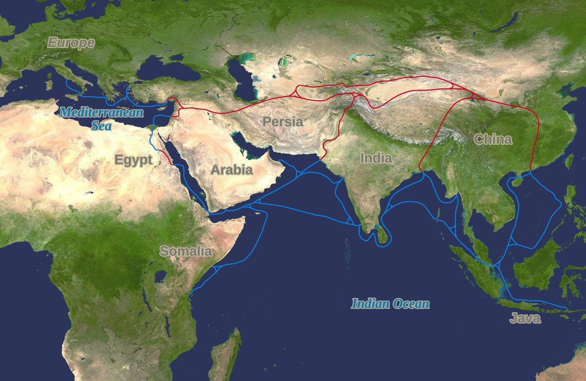

2.7 Comparison of Economic Exchange
- LO-A: LO: Comparing the three networks: The Silk Roads, Indian Ocean, and trans-Saharan networks all relied on relay trading (no single merchant traveled the full route), all spread Islam peacefully through merchant contact, and all created permanent diasporic merchant communities in foreign cities. The key differences are in technology (ships vs. camels), cost and speed (maritime was cheapest, overland most expensive per unit), and dependence on political stability (Silk Roads required political unity; Indian Ocean did not). LO: What comparison reveals: Putting the three networks side by side reveals a broader pattern: commercial exchange in c. 1200–1450 was driven by geographic specialization (each region had something others wanted), enabled by specific technologies suited to the terrain, and sustained by diasporic communities who bridged cultural and linguistic gaps. The networks look different on the surface, desert routes vs. ocean routes vs. mountain passes, but they share a common logic: move high-value, low-weight goods across long distances using specialized middlemen. For the AP exam: The comparison skill requires more than listing similarities and differences. A strong AP comparison argument explains why the similarities or differences exist and what they reveal about the period. "All three networks spread Islam" is a similarity. "All three spread Islam because Muslim merchants dominated long-distance trade, and merchants who shared a legal and cultural framework could trust each other across cultural boundaries" is an analysis, and that's what earns points on the AP exam.
Try each question before revealing the answer.
1. Comparison: What did the Silk Roads, Indian Ocean trade, and trans-Saharan routes have in common?
2. Comparison: What was the most significant difference in the technology used by each network?
3. Causation: Why were maritime trade routes (Indian Ocean) generally cheaper per unit than overland routes (Silk Roads)?
4. Comparison: Which network was most dependent on political stability, and why?
5. Argumentation: Which of the three trade networks had the most lasting historical impact? Defend your answer.
- Using the historical thinking skill of comparison, explain the similarities and differences among the various networks of exchange in the period c. 1200–1450.
Tap a term for its definition.
-
Definition: Seasonal, predictable wind patterns over the Indian Ocean that blow northeast in winter and southwest in summer; Indian Ocean merchants timed their voyages to harness these winds for reliable, faster travel. Significance: The technology enabling Indian Ocean trade, contrast with Silk Roads (overland caravans) and Trans-Saharan trade (camels across desert) to see how geography shaped each network.
-
Definition: A system in which goods pass through multiple middlemen rather than being carried by a single merchant from origin to destination. Significance: All three major trade networks of c. 1200–1450 operated on the relay model. This is why trading cities, Samarkand, Malacca, Timbuktu, grew wealthy as middlemen, even when they produced nothing themselves.
-
Definition: High-value, low-weight goods, silk, spices, porcelain, gold, precious stones, that could justify the high cost of long-distance transportation. Significance: All three networks were fundamentally built on luxury goods. Heavy, bulky staples (grain, timber) couldn't bear the cost of overland transport across thousands of miles, so trade networks selected for light, expensive goods that maintained their value across the journey.
-
Definition: A group of people living permanently outside their homeland who maintain cultural identity and connections to their origin. Significance: Arab merchants in East African ports, Indian merchants in Southeast Asian city-states, Chinese merchants in Malacca. These diasporic communities were the human infrastructure that made intercontinental trade possible. They provided language skills, legal knowledge, and commercial relationships that allowed strangers from different cultures to do business reliably.
-
Definition: The economic pattern in which different regions produce goods that are scarce elsewhere, creating mutual dependence and the incentive to trade. Significance: Geographic specialization drove all three networks: West Africa had gold but needed salt; China had silk but needed spices; India had cotton and spices but wanted Chinese porcelain. Without geographic specialization, long-distance trade has no economic logic.
-
Definition: The period of relative peace and stability across the Mongol Empire (c. 1250–1350) that allowed merchants, diplomats, and travelers to move safely across the Eurasian landmass. Significance: A key continuity-and-change point, the Pax Mongolica temporarily expanded Silk Road trade, then the empire's collapse disrupted it, while Indian Ocean and Trans-Saharan networks continued independently.
🔍 Why Historians Compare
Before we put the three networks side by side, it's worth understanding why historians bother comparing at all. Comparison isn't just an academic exercise. It reveals patterns that individual examples conceal.
When you study the Silk Roads alone, you might think that relay trading was a feature of overland routes caused by the difficulty of crossing Central Asian deserts. When you discover that the Indian Ocean network also used relay trading, even though ships could technically carry a merchant much farther than any caravan, you realize the relay model is a structural feature of long-distance trade, not a consequence of any particular terrain. That insight only becomes visible through comparison.
Similarly, when you notice that Islam spread along all three networks, you're forced to ask: what about Muslim merchants specifically enabled this? The answer, that Islam provided a shared legal framework, language, and credit system that made transactions between strangers more reliable, illuminates something about religion and commerce that no single network could reveal on its own.

The three major trade networks of c. 1200–1450: the overland Silk Road (green), the Indian Ocean maritime routes (blue), and the trans-Saharan routes (not shown, but running north-south across Africa). All three operated simultaneously and competed for the same luxury goods and merchant populations. Image credit not specified.
📊 The Three Networks: Side by Side
Here is a structured comparison of the three major trade networks. Study each row carefully, the patterns across columns are more important than any individual cell.
✅ Similarities: What All Three Networks Shared
Beneath their surface differences, all three networks operated on the same basic logic. Understanding these structural similarities is as important as cataloguing the differences.
No merchant traveled the full length of any network. Silk changed hands a dozen times between its Chinese manufacturer and its Roman consumer. Gold was traded at oases, at trans-Saharan crossing points, and at North African ports before reaching Mediterranean buyers. Spices moved from Southeast Asian growers to Indian merchants to Arab traders to Venetian buyers over months or years. The relay model was not a flaw. It was the system. Each segment was managed by specialists who knew their stretch of the route, its dangers, its seasonal patterns, and its buyer-seller relationships.
Islam spread along every major trade network in this period, not through conquest, but through commerce. Muslim merchants were disproportionately active on all three networks, for a practical reason: Islamic law provided a shared legal and commercial framework that made transactions between strangers more reliable. The hawala credit system, the legal validity of contracts made between Muslims in different countries, and the shared language of Arabic for record-keeping all gave Muslim merchants a competitive advantage. Where Muslim merchants went, mosques followed, and local elites often converted, not because they were forced to, but because conversion connected them to the Islamic commercial and legal world.
Every network produced permanent communities of merchants who settled in foreign cities and maintained cultural ties to their homelands. Arab merchants in Kilwa and Malacca. Indian merchants in Hormuz and Calicut. Chinese merchants in the ports of Southeast Asia. These weren't tourists. They were permanent residents who spoke multiple languages, understood local customs and legal systems, and served as essential bridges between their home trading networks and their adopted cities. Without diasporic communities, long-distance trade would have required rebuilding trust and legal frameworks from scratch at every transaction.
All three networks moved high-value, low-weight goods, silk, spices, gold, porcelain, gems, ivory. Heavy bulk goods (grain, timber) couldn't justify the cost and risk of long-distance transportation. This created a structural pattern: the farther a good traveled, the more valuable it had to be to remain profitable. Goods that were common at home became luxuries abroad, and vice versa, creating the price differentials that made trade profitable in the first place.
As Topic 2.6 established, all three networks transmitted disease as well as goods. The Black Death traveled along Silk Road routes. Other epidemics moved through Indian Ocean and trans-Saharan networks. Connectivity is not selective. It transmits everything that can be transmitted, including pathogens. This is not unique to any one network; it is a structural feature of all high-volume commercial exchange systems.
⚡ Key Differences: What Made Each Network Distinct
The most obvious difference: the Indian Ocean network used ships; the Silk Roads and trans-Saharan routes used land animals. This wasn't a choice. It was a geographical necessity. You can't sail across the Sahara or the Central Asian steppe. You can't drive a camel caravan across the Indian Ocean. Each network's technology was an adaptation to its environment.
But technology also determined economic structure. A large Chinese junk could carry hundreds of tons of cargo. A camel carries 300–600 lbs. Even a large caravan of 1,000 camels couldn't match a single large ship's capacity. This means maritime trade was far cheaper per unit of cargo, which is why heavy, bulky spices and cotton moved efficiently across the Indian Ocean, while the Silk Roads selected for lightweight, ultra-high-value goods (silk) that could justify the cost of land transport.
The Silk Roads were uniquely dependent on political stability. The overland routes passed through dozens of different territories, any one of which, if unstable or hostile, could close the route. This is why the Silk Roads flourished under the Pax Mongolica and contracted during periods of political fragmentation. Merchants couldn't reroute around a hostile Central Asian power the way a ship captain could route around a hostile port city.
The Indian Ocean was far more politically resilient. If one port city became hostile or corrupt, merchants could shift to a competitor. Malacca's rise was partly the result of merchants seeking a more stable alternative to earlier ports. No single political power could block the entire Indian Ocean network the way fragmentation of Central Asian power could cripple the Silk Roads.
The Silk Roads ran primarily east-west, connecting East Asia to the Mediterranean. The Indian Ocean network was roughly circular, driven by the monsoon cycle, it moved trade in a seasonal loop connecting East Africa, Arabia, India, Southeast Asia, and China. The trans-Saharan routes ran primarily north-south, connecting sub-Saharan West Africa to North Africa and the Mediterranean world. These directional differences meant that each network connected different civilizations and moved different goods.
Control structures differed significantly. The Silk Roads were controlled by a series of empires and powerful states that taxed transit trade (Abbasid Caliphate, Mongol khanates). The Indian Ocean was more decentralized, port cities like Kilwa, Calicut, and Malacca accumulated wealth by taxing trade but competed with each other. The trans-Saharan routes were controlled primarily by West African empires (Mali being the peak example) that taxed caravans on both ends, goldfields at one end, termini at the other, without needing to produce either gold or salt themselves.
✏️ Mastering the Comparison Skill for the AP Exam
The AP exam rewards analysis, not just knowledge. Here's the difference between a fact-based response and a comparison-based response:
Weak: "The Silk Roads and the Indian Ocean trade both spread Islam."
Strong: "Both the Silk Roads and the Indian Ocean trade spread Islam through peaceful merchant contact rather than military conquest, because Muslim merchants dominated both networks and their shared religious-legal framework, including the hawala credit system and standardized contract law, made commercial transactions between culturally distant strangers more reliable than they would have been without a shared institutional framework."
The weak version is a fact. The strong version is an analysis. Both start from the same observation, but only the strong version explains why the similarity exists and what it reveals about the period.
When you write a comparison thesis, aim for this structure: "While [networks] shared [similarity], they differed in [difference], demonstrating that [conclusion about the period]."
These videos will help you review Comparison of Economic Exchange and solidify key concepts before your exam.
- A) Both the Indian Ocean and the Silk Roads spread Buddhism through sustained merchant contact
- B) Arab merchants were exclusively responsible for Islamic expansion in both East Africa and South Asia
- C) East Africa and Southeast Asia had identical social and political structures before the arrival of Muslim merchants
- D) The Indian Ocean and trans-Saharan networks both spread Islam through peaceful commercial contact rather than military conquest
- A) Merchants along all three networks lacked the organizational capacity to move heavy goods
- B) Religious restrictions in both Islam and Buddhism prohibited the trade of agricultural staples
- C) The high cost and risk of long-distance transportation meant only goods that could maintain high value across the journey were economically viable to trade
- D) Governments along all three routes taxed only luxury goods, leaving staple goods untaxed and therefore unprofitable
- A) The Indian Ocean network was larger and more economically significant than the Silk Roads
- B) The Silk Roads required unified political control to function efficiently, while the Indian Ocean was more resilient to political disruption
- C) Mongol merchants were the primary traders on the Silk Roads but had no presence in Indian Ocean commerce
- D) Maritime technology was inherently superior to overland transportation for all types of goods
- A) The role of diasporic merchant communities in sustaining long-distance commercial exchange
- B) The dominance of Arab political power over all three trade networks
- C) The tendency of foreign merchants to assimilate completely into host societies
- D) The exclusive use of Arabic as the commercial language across all trade networks
- A) Both networks were monopolized by a single merchant culture that controlled all trade from origin to destination
- B) Both networks were exclusively overland, avoiding maritime routes entirely
- C) Both networks operated on a relay trading model in which goods passed through multiple middlemen rather than being carried by one merchant the full distance
- D) Both networks traded identical goods, silk and gold, making them direct economic competitors
Use the passage and your knowledge of AP World History to answer parts A, B, and C.
(A) Briefly explain ONE specific similarity between the Silk Roads and the Indian Ocean trade networks in the period c. 1200–1450.
(B) Briefly explain ONE significant difference between the trans-Saharan trade network and the Indian Ocean trade network in the period c. 1200–1450.
(C) Briefly explain how comparing the three major trade networks of c. 1200–1450 reveals something about the nature of long-distance trade in this period that studying only one network would not reveal.
This is a full comparison LEQ. Sketch a thesis and evidence outline, then check the model.